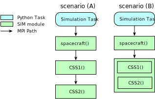
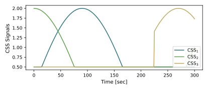
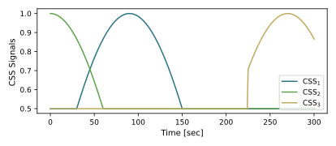
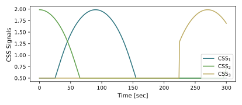

scenarioCSS
Overview
This script sets up a 6-DOF spacecraft in deep space without any gravitational bodies. Only rotational motion is simulated. The script illustrates how to setup CSS sensor units and log their data. It is possible to setup individual CSS sensors, or setup a constellation or array of CSS sensors.
The script is found in the folder basilisk/examples and executed by using:
python3 scenarioCSS.py
When the simulation completes a plot is shown for the CSS sensor signal history.
The simulation layout options (A) and (B) are shown in the following illustration. A single simulation process is created which contains both the spacecraft simulation module, as well as two individual CSS sensor units. In scenario (A) the CSS units are individually executed by the simulation, while scenario (B) uses a CSS constellation class that executes a list of CSS evaluations at the same time.
The dynamics simulation is setup using a Module: spacecraft module where a specific spacecraft location is specified. Note that both the rotational and translational degrees of freedom of the spacecraft hub are turned on here to get a 6-DOF simulation. The position vector is required when computing the relative heading between the sun and the spacecraft locations. The spacecraft position is held fixed, while the orientation rotates constantly about the 3rd body axis.
The Field-Of-View variable fov must be specified. This is the angle between the sensor bore-sight and the edge of the field of view. Beyond this angle all sensor signals are set to zero. The scaleFactor variable scales a normalized CSS response to this value if facing the sun head on. The input message name InputSunMsg specifies an input message that contains the sun’s position. If sensor corruptions are to be modeled, this can be set through the variables:
CSS1.KellyFactor
CSS1.SenBias
CSS1.SenNoiseStd
The Kelly factor has values between 0 (off) and 1 and distorts the nominal cosine response. The SenBias variable determines a normalized bias to be applied to the CSS model, and SenNoiseStd provides Gaussian noise.
To create additional CSS sensor units, copies of the first CSS unit can be made. This means only the parameters different in the additional units must be set.
A key parameter that remains is the CSS sensor unit normal vector. There are
several options to set this vector (in body frame components). The first
method is to set \(\hat{\mathbf n}\) or nHat_B directly. This is
done with:
CSS1.nHat_B = np.array([1.0, 0.0, 0.0])
CSS2.nHat_B = np.array([0.0, -1.0, 0.0])
Another option is to use a frame associated relative to a common CSS platform \(\cal P\). The bundled CSS units are often symmetrically arranged on a platform such as in a pyramid configuration. The the platform frame is specified through:
CSS1.setBodyToPlatformDCM(90.*macros.D2R, 0., 0.)
where the three orientation angles are 3-2-1 Euler angles. These platform angles are initialized to zero. Next, the CSS unit direction vectors can be specified through the azimuth and elevation angles (\(\phi\), \(\theta\)). These are (3)-(-2) Euler angles.
CSS1.phi = 90.*macros.D2R
CSS1.theta = 0.*macros.D2R
If no platform orientation is specified, then naturally these azimuth and elevation angles are measured relative to the body frame \(\cal B\).
An optional input message is the solar eclipse message sunEclipseInMsg.
If this message input name is specified for a CSS unit, then the eclipse
information is taken into account. If this message name is not set, then
the CSS defaults to the spacecraft always being in the sun.
Illustration of Simulation Results
The following images illustrate the expected simulation run returns for a range of script configurations.
show_plots = True, useCSSConstellation=False, usePlatform=False, useEclipse=False, useKelly=False
This scenario simulates the CSS units being setup individually without any corruption. The sensor unit normal axes are directly set, and no eclipse is modeled. The signals of the two CSS units range from a maximum of 2 if the CSS axis is pointing at the sun to zero. The limited field of view of 80 degrees causes the sensor signal to be clipped when the sun light incidence angle gets too small.
show_plots = True, useCSSConstellation=False, usePlatform=True, useEclipse=False, useKelly=False
The resulting CSS sensor signals should be identical to the first scenario as the chosen platform orientation and CSS azimuth and elevation angles are chosen to yield the same senor normal unit axes.
show_plots = True, useCSSConstellation=False, usePlatform=False, useEclipse=True, useKelly=False
The resulting CSS signals are scaled by a factor of 0.5 and are shown below.
show_plots = True, useCSSConstellation=False, usePlatform=False, useEclipse=False, useKelly=True
This causes the CSS signals to become slightly warped, and depart from the nominal cosine behavior.
show_plots = True, useCSSConstellation=True, usePlatform=False, useEclipse=False, useKelly=False
The resulting simulation results are shown below to be identical to the first setup as expected.
- scenarioCSS.run(show_plots, useCSSConstellation, usePlatform, useEclipse, useKelly)[source]
At the end of the python script you can specify the following example parameters.
- Parameters:
show_plots (bool) – Determines if the script should display plots
useCSSConstellation (bool) – Flag indicating if the CSS cluster/configuration class should be used.
usePlatform (bool) – Flag specifying if the CSS platform orientation should be set.
useEclipse (bool) – Flag indicating if the eclipse input message is used.
useKelly (bool) – Flag specifying if the Kelly corruption factor is used.